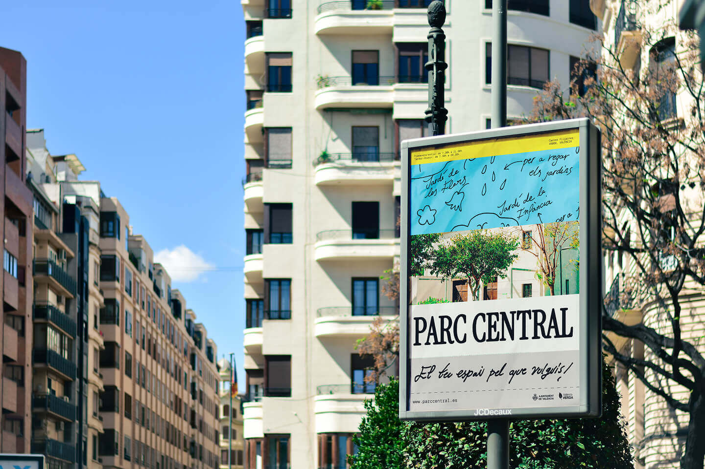
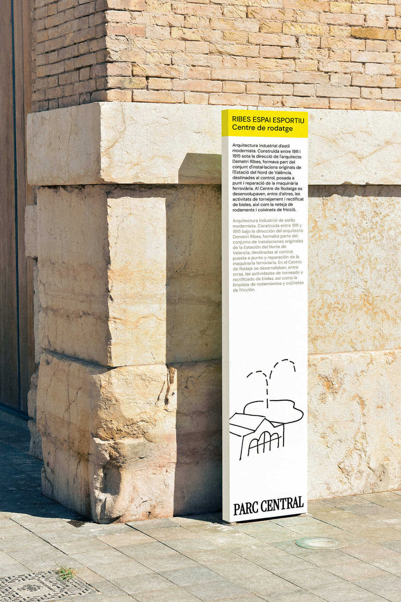
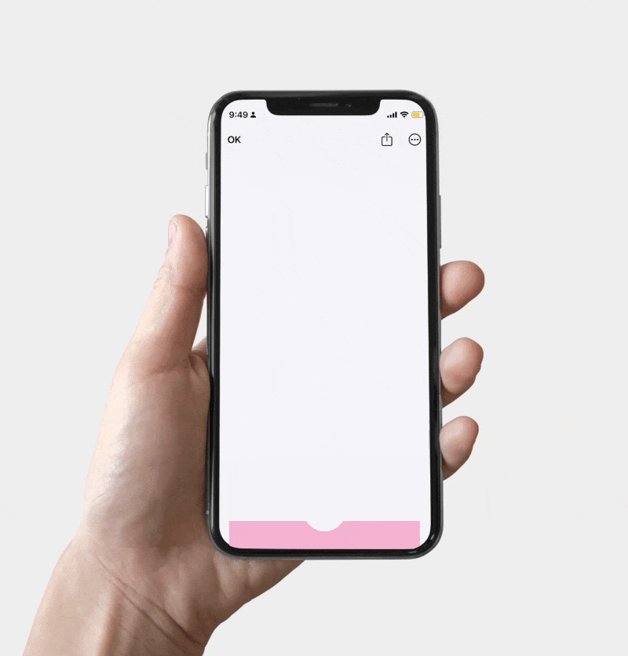

Xana
Client: University project
Year:
Valencia's Parc Central is a vibrant urban green space. Its visual identity uses the exquisite corpse technique, merging independent elements into a dynamic system that reflects the park’s diverse activities and interactions.
Read more
Valencia's Parc Central is an urban green space that


